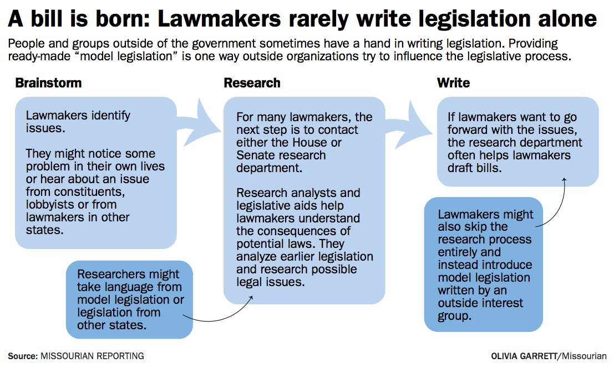
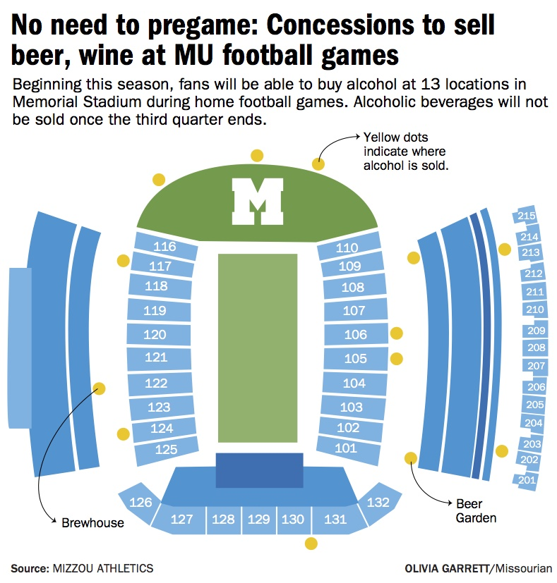

Olivia J. Garrett
Design
I'm currently working on the graphics desk at the Columbia Missourian, making maps, charts and illustrations.



While an intern at POLITICO Europe, I designed several pages each week for the print edition using Adobe InDesign. This involved picking out visuals and then laying out the headlines, bylines, photos, photo captions and articles to fit the constraints of the page in an appealing manner. Here are a few of the layouts I worked on:

Contact Me!
Email:
oliviagarrett@mail.missouri.edu
Twitter: